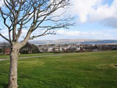
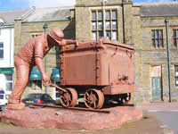
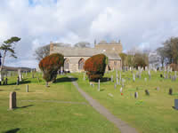
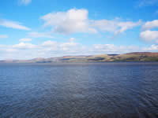
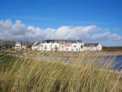
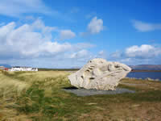
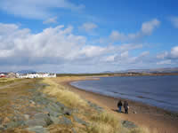

|
 Close to the Duddon Estuary and the imposing fell of Black Combe is the medium sized town of Millom.
Until the discovery of iron-ore at Hodbarrow on the towns outskirts in 1855, Millom was a collection of small fishing villages and scattered farms. The iron-ore mining together with steel making transformed this once undisturbed area to one of a large prosperous community of some 10,000 inhabitants which thrived until closures began in the late 1950’s and early 60’s.
A vivid reminder of those days stands in the market place in the form of a sculpture “the scutcher” whose back breaking job it was to halt the heavily laden tubs of iron-ore by thrusting an iron bar through the wheels.
 The Millom Folk Museum comprehensively records the rise and fall of the iron-ore and steel making industries. The museum was opened by Millom born poet Norman Nicholson in 1974. He was a poet not in the mould of William Wordsworth, but one who wrote of the everyday life of the towns people; their joys and their hardships. The sight of unemployed men struggling to support their families following the closure of the iron-ore mines and steel making affected him deeply.
 The Church of St. George's has a stained-glass window designed by Christine Boyce who was inspired by Norman Nicholson's poetry, plays, novels and short stories as were many others.
The library in the market square has a room devoted to his works. He died in 1987 aged 73 years.
Nowadays you can walk the path to Hodbarrow and its abandoned workings and memories and look out to sea from what is now a RSPB Nature Reserve, home to rare plants and the even rarer Natterjack Toad.
Millom Castle stands on the entrance to the town approached along the A5083 from Broughton-in-Furness. Little remains of the castle which is not open to the public. It backs onto the 12th C Grade 1 listed Holy Trinity Church. The late Norman structure is built from red sandstone and inside are several interesting stained-glass windows including one of “The Last Supper”. The churchyard contains a fine looking sundial which possibly has some connection with the late Sir John Huddleston who was granted a Charter in 1251 by Henry 11 to hold a market every Wednesday .A booklet is available in the church detailing the history.
 Millom is a town which wears its past on its sleeve, not glamorous but rich in down to earth hospitality and warmth. Accommodation is plentiful and sensibly priced in and around the town with the safe beaches of Haverigg and Silecroft a short drive away. You are within easy reach of the famous Ravenglass to Boot Ratty Railway; Scafell Pike, England's highest mountain; Wastwater, the deepest lake, and the smallest church at Wasdale Head. We look forward to welcoming you.
 Haverigg is only a couple of miles up the coast from Millom. It's a small coastal resort in a lovely setting with the sea on one side, and on the other, the easily accessible fell of Black Combe standing at around 1000 feet, or 300 metres. Haverigg has a safe beach where children can play in comfort; is ideal for kite flying; walking the dog; horse riding, or just relaxing.
A small beach café offers sandwiches, warm meals, non-alcoholic drinks, ice-creams and is located next to a children's adventure playground. The holiday caravan park is a few minutes away.
 A striking sculpture by the Brazilian artist Josephina de Vasconcellos always attracts a good deal of interest from its position near the dunes facing the sea. It is dedicated to the inshore rescue teams.
Close by is the disused wartime airfield of Kirksanton, the birthplace of the Royal Air Force Mountain Rescue.
The only revolving propellers these days are the gently turning 25 metre blades of several 45 metre tall wind generators. They produce sufficient electricity for over 1000 homes. Some people consider them to be an eyesore, but to me, there is a certain majesty in their form and presence.
The Royal Air Force Museum on the Bank Head Estate displays a couple of older types of aircraft and equipment. More importantly it provides information on the aircrew of other nations who died fighting for this country in WW2. The nearby graveyard in the grounds of Saint Luke’s Church is the resting place of some of those who gave their lives.
 Haverigg is one of the quieter locations in the Lake District well suited to bird-watchers, cyclists and walkers. Incidentally, the walk along a level path from Millom to Haverigg passing through the RSPB. Nature Reserve is well recommended especially on a warm autumn day when there may be a few ripe blackberries left to pick.
Accommodation in the area is plentiful ranging from budget prices to the more up-market. The comfortable eating places offer appetizing menus and try not to miss the mid-day or evening pint of the local brew in the convivial surroundings of the welcoming pubs. The West Coast attractions, the lakes and mountains are easily reached from this relaxing laid-back resort. You can be assured of a warm friendly welcome in Haverigg.
How to get there:
By rail: From the West Coast Main Line, change at Carnforth or Preston for Millom.
By road: Leave the M6 at J36 and follow signs for Barrow on the A590. On reaching Greenodd, take the A5092 to Broughton-in-Furness and then the A595 to Millom.
Local links:
Hodbarrow Nature Reserve
The site is owned by the RSPB and designated a site of Special Scientific Interest. Also home to the Natterjack Toad. Well worth a visit.
Millom Ironworks Local Nature Reserve
An important site for Tern species and a number of wading birds. Various birds of prey can be seen throughout the year.
Cumbrian Heavy Horses
Clydesdale and Shire Heavy Horse Riding.
www.cumbrianheavyhorses.com
Haverigg beach
A child safe area with dunes, children’s play area and a small café and shop.
Sea and fresh water fishing
Day and weekly permits available from Millom Tourist Information Centre at the railway station. For further information, contact Mr B Crawford Phone: 01229 777648
Millom Folk Museum
An interesting insight in to the rise and fall of the iron mining and steel making industries plus an area devoted to the towns writer and poet, the late Norman Nicholson. Combine this with a visit to the statue of the “Scutcher” in the Market Square. Open Good Friday – 31October, Tuesday – Sunday, 10.30 am– 4.30pm
Millom Castle
The castle saw action during the English Civil War. Little remains of it except the crumbling outer walls.
Holy Trinity Church
Stands next to the castle. It is a late Norman 12th C building constructed of red sandstone. The churchyard contains several listed monuments one of which is a fine old sundial near the south wall of the church.
Saint Georges Church
Built in 1847 and includes the Norman Nicholson Memorial Window designed by Christine Boyce.
R.A.F. Museum
Bankhead Estate, Haverigg. An interesting display with several items on show which have been excavated from WW2 wreck sites.
Phone: 01229 772636
Back to Local Links menu
Back to Local Links menu
Back to Local Links menu
Steves Private Hire
A reliable service offering journeys in comfort and safety. Long and short distance. Try our Courier Service.
Phone: +44 (0)1229 771135 or 777080
Back to Local Links menu
(C of E) Holy Trinity
A late Norman building of red sandstone. See the unusual “fish window” in the west wall of the Huddleston Chapel.
Phone: +44 (0)1229 772889
(C of E) St. Georges Church
Built 1874-7 at a time of the town's industrial prosperity. It houses a window memorial to the inspirational local poet, Norman Nicholson.
Phone: +44 (0)1229 772889
(C of E) (Thwaites) St Annes
Phone: +44 (0)1229 772889
(C of E) St. Luke's
Haverigg, Millom
Phone: +44 (0)1229 772889
(RC) Our Lady and St James
Queen Street, Millom
Contact Father Frank
Tel: 01229 772479
Baptist Church
Crown Street, Millom
Methodist Church
Queen Street, Millom
Salvation Army
Captains Michael & Rebecca Eden
Nelson Street, Millom
Tel: 01229 772775
Back to Local Links menu
|